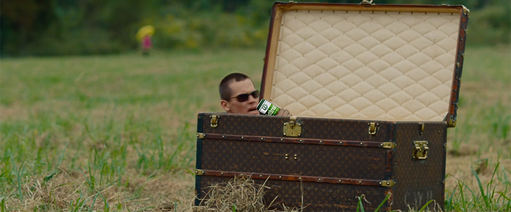

Spike Lee's Oldboy
Cutthroat Pale Ale
Spike Lee's latest film, Oldboy, is a remake of the 2003 Korean film of the same name directed by Chan-wook Park. In general, film remakes have to fight an uphill battle because they are always being compared to their predecessors. In addition to being well directed, well acted, well written, etc., a remake needs to prove that it’s not redundant. What makes remaking Oldboy, specifically, so challenging is that one of the aspects of the film that makes it so great is watching the mystery unfold, and so filmgoers who have already seen the original will already know the story’s dramatic conclusion. Lee's Oldboy is a great film, but since it’s not as good as the original, and since you can only experience Oldboy’s twisted mystery being unveiled once, you are better off watching Park’s version.
This concludes the spoiler-free portion of this film review. The following will be analysis of what makes Park’s Oldboy better than Lee's. But first, what better beer to drink with this movie than Tree Brewing Company’s Cutthroat Pale Ale? This beer has a strong, sharp taste that will make you think of REVENGE! And also, throat-cutting is what Spike Lee’s Oldboy is all about!
Lee's Oldboy makes certain changes to the plot of the original, but this is not where remake fails. Some of these plot-changes are for the better, and some are for the worse, so putting the scripts from both films head-to-head ends in a draw. Lee's Oldboy spends more time fleshing out Joe Doucett’s character at the beginning of the film, letting the viewer know what a dirtbag he is. Park’s Oldboy devotes only one seen to depicting Dae-su Oh’s drunken debauchery, and this makes the later scenes of Dae-su Oh recounting all of the people he has wronged in his journal a bit confusing. Another plot-change that was for the better was making the villain avenge a father-son relationship, rather than a brother-sister relationship. This makes villain’s mode of revenge more appropriate, and the ending less of a weird, incest-filled version of The Twilight Zone. One of the more questionable changes made to the plot was the decision to NOT use hypnosis in making Joe Doucett and Marie Sebastian fall in love. It’s possible that writer Mark Protosevich felt that hypnosis would be too cheesy, but the idea that Adrian could have made any two individuals fall in love by arranging for them meet each other is just too unbelievable.
The casts of both Oldboy’s were very good. Korean actor Min-sik Choi does a better job than Josh Brolin in some of the more emotional scenes, but both actors play the role well. In terms of the acting, comparing both films ends in a draw.
Where Park’s Oldboy outshines Lee’s is the in the visuals. Lee’s Oldboy is has some very good scenes. The one-shot scene in which Adrian’s father coldly and calmly walks through his home, offing everyone in his family with a shotgun is chilling and definitely memorable. Lee’s homage to Park’s corridor fight scene is also very good, albeit not as good as the original (that old film-remake problem). Park’s Oldboy, on the other hand, has just so many visually memorable scenes that make it a classic: Dae-su Oh coming out of the suitcase in a field of grass, the corridor fight scene, Woo-jin Lee doing some sort of yoga in his apartment, a young Dae-su Oh at private school hanging upside down next to Lee Soo-ah, a young Woo-jin Lee crying while holding his sister’s hand as she is about to fall into the river below, Dae-su Oh waking up from hypnosis in a snowy forest. And I guess I should also mention Min-sik Choi eating a live octopus, but I felt too bad for the octopus to enjoy that scene.
So that's it. Spike Lee’s Oldboy is a very good film, but since you’re better off watching the original, it’s ultimately redundant. Filmmakers should draw inspiration from classics, not remake them.